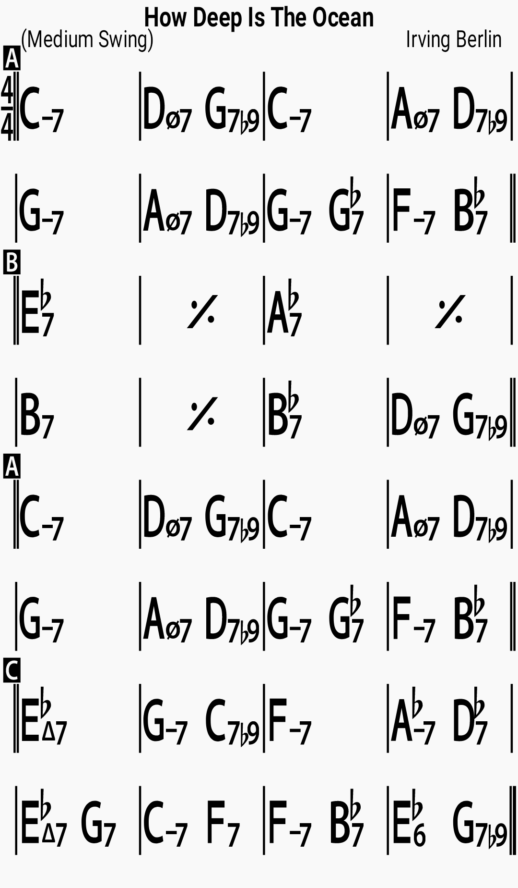

Chords

Lyrics
How much do I love you? I'll tell you no lie How deep is the ocean? How high is the sky? How many times a day Do I think of you? How many roses Are sprinkled with dew? How far would I travel To be where you are? How far is the journey From here to a star? And if I ever lost you How much would I cry? How deep is the ocean? How high is the sky?